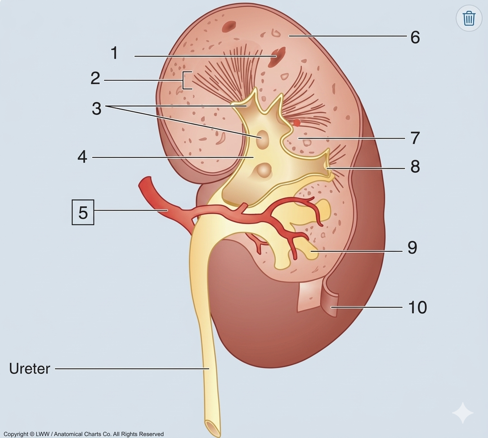

Urinary System Final Exam
Generated for Offline PDF Study.
🖨️ PDF Print Engine
Exam Complete!
85%
42 / 50 Correct
Part I: Macroscopic Anatomy

Reference this image to visually verify your labelled structures.